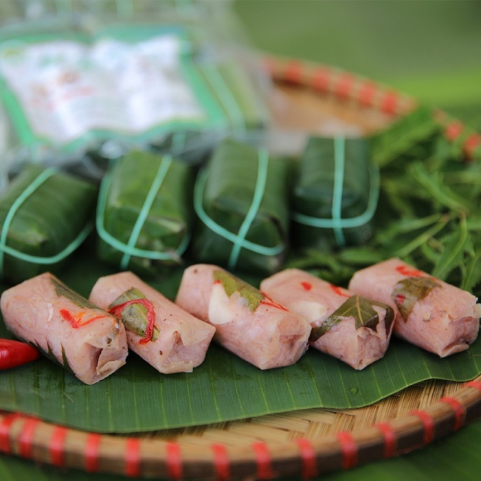
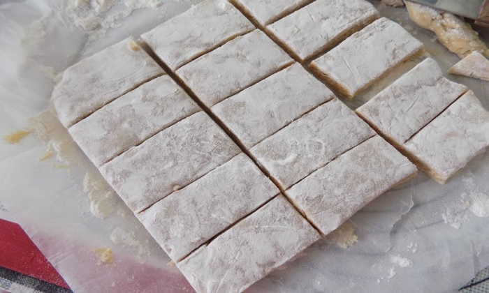
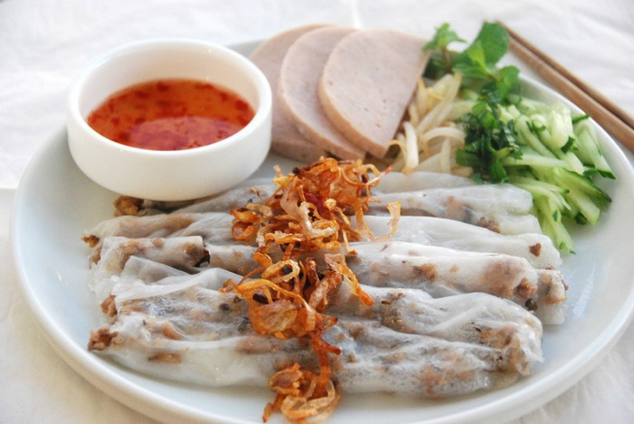
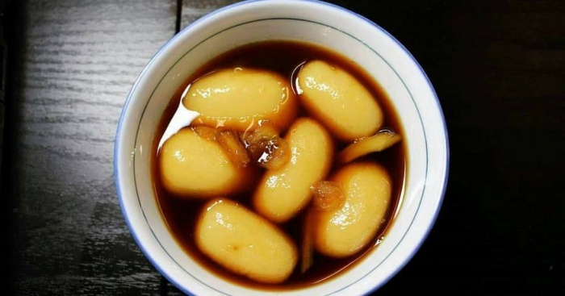
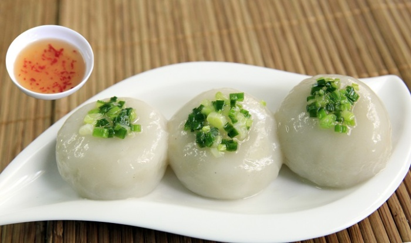

Nem chua là đặc sản của Thanh Hoá mà có lẽ không ai không biết. Đến Thanh Hoá, bất cứ du khách nào cũng muốn thưởng thức món ăn độc đáo này. Mặc dù nem chua có mặt ở rất nhiều những địa phương khác nhau, nhưng nem chua Thanh Hoá có vị rất riêng. Bên trong có màu đỏ hồng của thịt, thêm chút lá ổi, ớt thái nhỏ... Khi ăn vào, nem có vị chua, giòn, rất hấp dẫn. Nem chua Thanh Hoá cũng có khá nhiều loại: nem dài, nem vuông, nem thính, nem chua Thanh Hoá rán…
Một đặc sản Thanh Hoá nữa đến từ vùng đất Phủ Quảng là chè lam Thanh Hoá. Phủ Quảng là tên gọi cũ của huyện Vĩnh Lộc, là vùng đất có món chè lam nức tiếng xa gần. Khác với chè lam nơi khác, chè lam Phủ Quảng có vị ngọt thanh, giòn tan nơi đầu lưỡi. Thanh chè lam màu vàng ươm đẹp mắt. Nếu vừa ăn chè lam vừa nhâm nhi chén trà xanh thì quả đúng là mỹ vị. Miếng chè lam giòn giòn xen lẫn vị ngọt dịu của mật mía và hương gừng cay, thêm chút chát của trà xanh, thật là một món quà quê giản dị mà ý nghĩa.
Bánh cuốn Thanh Hóa có độ mềm dai nhưng không bị bở. Đây là đặc sản Thanh Hoá mà rất nhiều người yêu thích. Nhân bánh được chế biến từ thịt nạc vai, tôm tươi, hành và mộc nhĩ. Nước mắm được pha với loại mắm ngon, theo tỉ lệ thích hợp, thêm chút cốt chanh, hạt tiêu, ớt tươi. Phần hành khô rắc lên bánh phải là hành được xắt bằng tay, chiên vàng ruộm, không bị mềm. Chính vì vậy dù có thử hết các loại bánh cuốn từ nhiều vùng miền khác nhau, thì vị bánh cuốn xứ Thanh vẫn rất riêng biệt, không thể trộn lẫn
Bánh Nhè được làm với nhân dừa, đậu xanh và đường được gói trong lớp bột nếp dẻo mịn. Món bánh nấu bằng đường mật mía và gừng nên vị ngọt đậm đà và rất thơm. Khi ăn, bạn sẽ thấy vị dẻo của bột nếp, vị ngọt thơm, thanh tao của đường và gừng. phần nhân đậu xanh, dừa rất thơm và bùi. Đây là một thức quà quê dân dã và bình dị của người Thanh Hoá.
Bánh ít Thanh Hoá có hình tròn, màu trắng, được làm từ bột nếp, là sự kết hợp giữa bánh ít và bánh nếp. Nhân bánh bao gồm tôm, thịt băm nhỏ trộn cùng chút gia vị đặc trưng rồi mang đi hấp. Khi ăn bánh ít, bạn hãy rưới lên bánh một lớp mỡ hành béo ngậy, ăn kèm chút rau sống, dưa leo.
